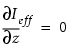

Parent topic: Optical Parameters File Format
Input for: opticsgen, modelflow (Version 1), modelflow_v2
Specifies the boundary condition at the top of the resist film.
vertical_diffusion_boundary [top { isolation | {sink | adiabatic ctop } } ]
An optional argument that sets Ieff at the top of the resist. z = 0 is isolated . (default)
An optional argument that sets Ieff at the top of the resist. z = 0 is kept at the constant value ctop.
An optional argument that sets a numerical value between 0 and 1 that represents an intermediately strong loss from the top:
0 — isolation
1 — sink
The ctop argument is used in the boundary condition at the top of the resist. It depends on the resist polarity. ctop should be set to 0 when resist is negative, and to Iclear (the image intensity of the clear field at the top of the resist) for positive resist. The default is 0.
An optional miscellaneous parameter specifying the boundary condition at the top of the resist film. (The bottom of the resist (z =h) is always full isolation.)
Set the boundary condition at the top of the resist to one of the following:
isolation
sink
adiabatic